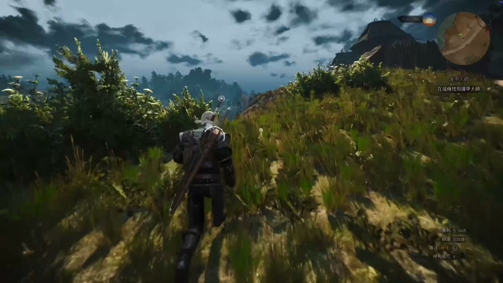
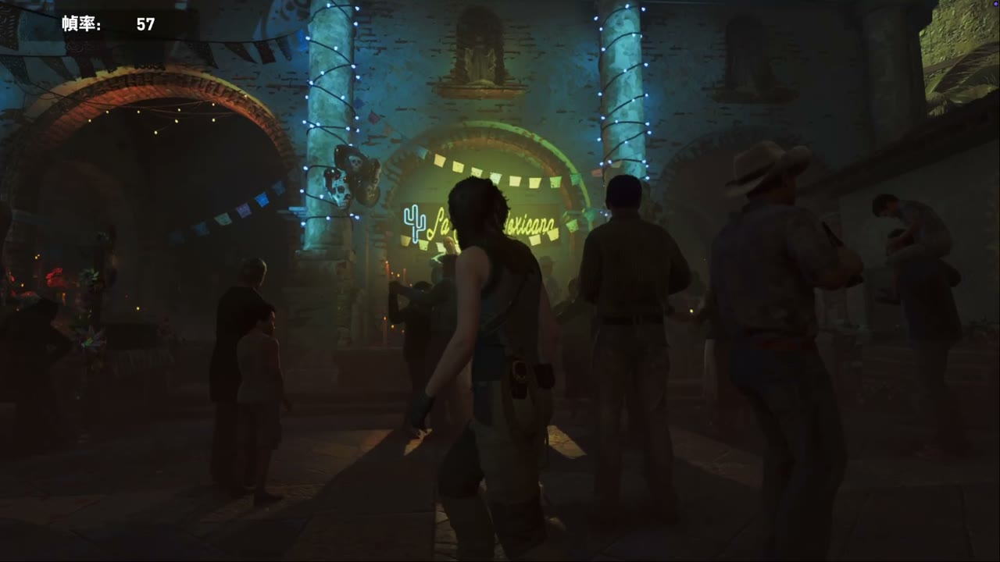
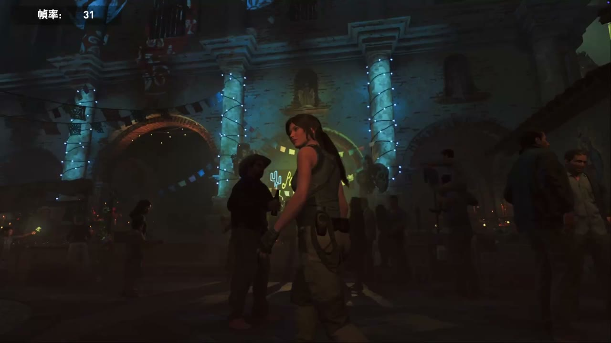
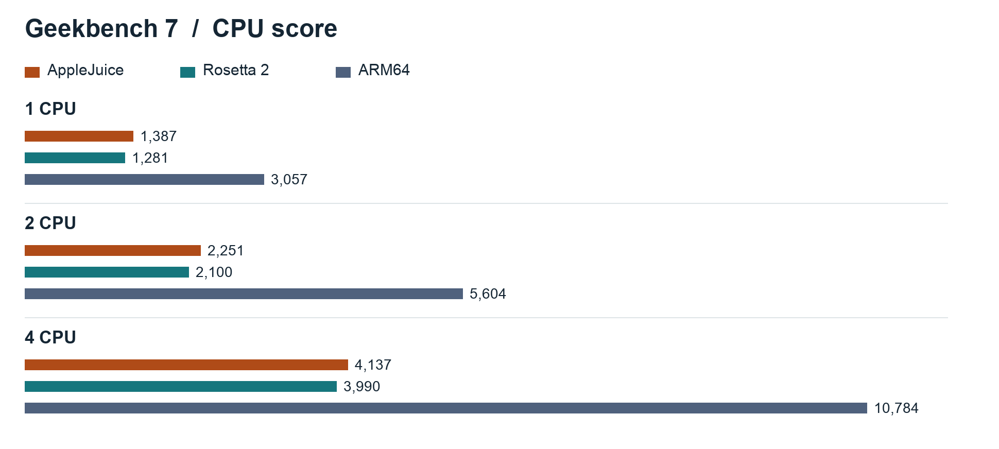

Windows gaming on Apple Silicon.
AppleJuice is free to use, and its source code is publicly available. Play supported Windows games on your Mac. AppleJuice translates x86 and x64 code to ARM64 and brings Direct3D graphics to Metal.
Apple Silicon · macOS 13 or later
Gameplay showcase
Recorded on Apple M4 Pro with 64 GiB of unified memory and macOS 27.2.1 at 1920 × 1080. Frontier Hunter uses AppleJuice 0.26.1126 build 727 with 2 CPU cores. The other games use build 1536 with 4 CPU cores. Only the final Tomb Raider chapter enables frame interpolation.
 0:12 · Frontier Hunter: Erza’s Wheel of Fortune
0:12 · Frontier Hunter: Erza’s Wheel of Fortune
 0:44 · Tales of Arise
0:44 · Tales of Arise

1:24 · The Witcher 3
1:54 · Shadow of the Tomb Raider
2:34 · Shadow of the Tomb RaiderFrom the tested library
| Status | Games |
|---|---|
| Works well | 30 |
| Works well (MetalFX) | 5 |
| Slow | 7 |
| Launches | 2 |
| Not working (WIP) | 2 |
Inside the runtime
A resident translator produces ARM64 code. Windows services connect the game to native graphics, input and audio. Output options include MetalFX upscaling, VideoToolbox frame interpolation and HRTF headphone mixing.
Explore the architectureCPU performance
Compare Geekbench 7 scores by workload on an Apple M4 Pro.

Getting started
How do I install a game?
Copy AppleJuice.app from the release DMG to Applications. Open the Launcher, choose Add EXE, select your game and review its drive mappings before pressing Play.
How do I install Steam?
Choose Run once and select SteamSetup.exe in the macOS file picker. After setup finishes, Steam.exe appears in the Launcher sidebar.
Which games work?
The tested list distinguishes default performance, enhanced output, slow gameplay, launch-only and failed runs. Check your edition and settings.